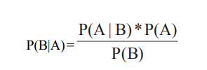
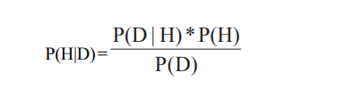
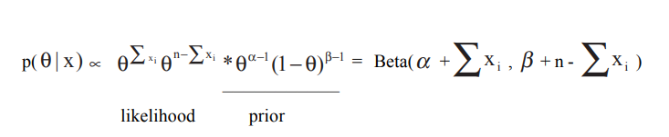

<html>
<head>
    <title>Assignement</title>
     <meta charset="UTF-8">
    <meta name="viewport" content="width=device-width, initial-scale=1.0">
    <link rel="stylesheet" href="style.css">
          </head>
<body>
    <center> 
        <h1><b>DATA MINING, CLASSIFICATION AND
SUPERVISED LEARNING</b></h1>
    </center>
    <p>&nbsp;&nbsp;&nbsp;&nbsp;
    There are different approaches to data mining, which can be grouped according to
the kind of task pursued and the kind of data under analysis. A broad grouping of data-mining algorithms includes classification, prediction, clustering, association, and se-quential pattern recognition.</p>
    <p>&nbsp;&nbsp;&nbsp;&nbsp;
    Data Mining is closely related to machine learning. Imagine a process in which a
computer algorithm learns from experience (the training data set) and builds a model that
is then used to predict future behavior. Mitchell (1997) defines machine learning as
follows: a computer program is said to learn from experience E with respect to some class
of tasks T and performance measure P, if its performance at tasks in T, as measured by
P, improves with experience E. For example, consider a handwriting recognition problem:
the task T is to recognize and classify handwritten words and measures; the performance
measure P is the percent of words correctly classified; and the experience E is a database
of handwritten words with given class values. This is the case of classification: a learning
algorithm (known as classifier) takes a set of classified examples from which it is expected
to learn a way of classifying unseen examples. Classification is sometimes called
supervised learning, because the learning algorithm operates under supervision by
being provided with the actual outcome for each of the training examples.</p>
    <p>&nbsp;&nbsp;&nbsp;&nbsp;
        Consider the following example data set based on the records of the passengers of
the Titanic1
. The Titanic dataset gives the values of four categorical attributes for each
of the 2,201 people on board the Titanic when it struck an iceberg and sank. The attributes
are social class (first class, second class, third class, crew member), age (adult or child),
sex, and whether or not the person survived. Table 1 below lists the set of attributes and
its values.
    </p>
     <p>&nbsp;&nbsp;&nbsp;&nbsp;
         In this case, we know the outcome of the whole universe of passengers on the
Titanic; therefore, this is good example to test the accuracy of the classification
procedure. We can take a percentage of the 2,201 records at random (say, 90%) and use
them as the input dataset with which we would train the classification model.
    </p>
     <p>&nbsp;&nbsp;&nbsp;&nbsp;
         The trained model would then be used to predict whether the remaining 10% of the
passengers survived or not, based on each passenger’s set of attributes (social class,
age, sex). A fragment of the total dataset (24 records) is depicted in Table 2.
    </p>
     <p>&nbsp;&nbsp;&nbsp;&nbsp;
         The question that remains is how do we actually train the classifier so that it is able
to predict with reasonable accuracy the class of each new instance it is fed? There are
many different approaches to classification, including traditional multivariate statistical
    </p>
    <p><i>Table 1: Titanic example data set</i></p>
    <center>
    <div class=table1>
    <table bgcolor="black" width="900px" >
        <tr bgcolor="white" >
            <th width="300px" align="right"><b>ATTRIBUTE </b></th>
            <th width="500px" align="left"><b>POSSIBLE VALUES </b></th>
           
        </tr>
        
        <tr  bgcolor="white" >
          <td>social class </td>
        <td>crew, 1st, 2nd, 3rd</td>
        </tr>
         <tr  bgcolor="white">
          <td>age </td>
        <td>adult.child</td>
        </tr>
         <tr align:left bgcolor="white">
          <td >sex</td>
        <td>male,female</td>
        </tr>
         <tr align:left bgcolor="white">
          <td>survived </td>
        <td>yes,no</td>
        </tr>
    </table></div></center><br>
    
    <p><i>Table 2: Fragment of Titanic data set</i></p>
    
    <div class="tab">
        <div class="tb1">
             
    <table bgcolor="black" width="125px" >
        <tr bgcolor="white" >
            <th width="25px" ><b>Instance </b></th>
            <th  width="25px" ><b>Social Calss </b></th>
            <th  width="25px" ><b>Age </b></th>
            <th  width="25px" ><b>Sex </b></th>
            <th  width="25px" ><b>Survived</b></th>
                       
        </tr>
        
        <tr  bgcolor="white" align="center">
          <td align="right">1 </td>
        <td>2nd</td>
             <td>adult </td>
        <td>female</td>
            <td>yes</td>
        </tr>
         <tr  bgcolor="white" align="center">
          <td align="right">2 </td>
        <td >crew</td>
             <td>adult </td>
        <td>male</td>
            <td>no</td>
        </tr>
         <tr  bgcolor="white" align="center">
         <td align="right">3  </td>
        <td>crew</td>
             <td>adult </td>
        <td>male</td>
            <td>yes</td>
        </tr>
         <tr  bgcolor="white" align="center">
          <td align="right">4</td>
          <td>2nd</td>
          <td>adult</td>
          <td>male</td>
          <td>no</td>
        </tr>
         <tr  bgcolor="white" align="center">
          <td align="right">5</td>
          <td>2nd</td>
          <td>adult</td>
          <td>female</td>
          <td>yes</td>
        </tr>
         <tr  bgcolor="white" align="center">
          <td align="right">6</td>
          <td>crew</td>
          <td>adult</td>
          <td>male</td>
          <td>yes</td>
        </tr>
         <tr  bgcolor="white" align="center">
          <td align="right">7</td>
          <td>crew</td>
          <td>adult</td>
          <td>male</td>
          <td>no</td>
        </tr>
         <tr  bgcolor="white" align="center">
          <td align="right">8</td>
          <td>1st</td>
          <td>adult</td>
          <td>male</td>
          <td>no</td>
        </tr>
         <tr  bgcolor="white" align="center">
          <td align="right">9</td>
          <td>crew</td>
          <td>adult</td>
          <td>male</td>
          <td>yes</td>
        </tr>
         <tr  bgcolor="white" align="center">
          <td align="right">10</td>
          <td>crew</td>
          <td>adult</td>
          <td>male</td>
          <td>no</td>
        </tr>
         <tr  bgcolor="white" align="center">
          <td align="right">11</td>
          <td>3rd</td>
          <td>child</td>
          <td>male</td>
          <td>no</td>
        </tr>
         <tr  bgcolor="white" align="center">
          <td align="right">12</td>
          <td>2nd</td>
          <td>adult</td>
          <td>male</td>
          <td>no</td>
        </tr>
    </table>
            
         </div>
        <div class="tb1" >
          <table bgcolor="black" width="125px" >
        <tr bgcolor="white" >
            <th width="25px" ><b>Instance </b></th>
            <th  width="25px" ><b>Social Calss </b></th>
            <th  width="25px" ><b>Age </b></th>
            <th  width="25px" ><b>Sex </b></th>
            <th  width="25px" ><b>Survived</b></th>
                       
        </tr>
        
        <tr  bgcolor="white" align="center">
          <td align="right">13 </td>
        <td>3rd</td>
             <td>adult </td>
        <td>male</td>
            <td>no</td>
        </tr>
         <tr  bgcolor="white" align="center">
          <td align="right">14 </td>
        <td>1st</td>
             <td>adult </td>
        <td >female</td>
            <td>yes</td>
        </tr>
         <tr  bgcolor="white" align="center">
         <td align="right">15  </td>
        <td>3rd</td>
             <td>adult </td>
        <td>male</td>
            <td>no</td>
        </tr>
         <tr  bgcolor="white" align="center">
          <td align="right">16</td>
          <td>3rd</td>
          <td>child</td>
          <td>female</td>
          <td>no</td>
        </tr>
         <tr  bgcolor="white" align="center">
          <td align="right">17</td>
          <td>3rd</td>
          <td>adult</td>
          <td>male</td>
          <td>yes</td>
        </tr>
         <tr  bgcolor="white" align="center">
          <td align="right">18</td>
          <td>1st</td>
          <td>adult</td>
          <td>female</td>
          <td>yes</td>
        </tr>
         <tr  bgcolor="white" align="center">
          <td align="right">19</td>
          <td>crew</td>
          <td>adult</td>
          <td>male</td>
          <td>no</td>
        </tr>
         <tr  bgcolor="white" align="center">
          <td align="right">20</td>
          <td>3rd</td>
          <td>adult</td>
          <td>female</td>
          <td>no</td>
        </tr>
         <tr  bgcolor="white" align="center">
          <td align="right">21</td>
          <td>3rd</td>
          <td>adult</td>
          <td>female</td>
          <td>yes</td>
        </tr>
         <tr  bgcolor="white" align="center">
          <td align="right">22</td>
          <td>3rd</td>
          <td>adult</td>
          <td>female</td>
          <td>no</td>
        </tr>
         <tr  bgcolor="white" align="center">
          <td align="right">23</td>
          <td>3rd</td>
          <td>child</td>
          <td>female</td>
          <td>yes</td>
        </tr>
         <tr  bgcolor="white" align="center">
          <td align="right">24</td>
          <td>2nd</td>
          <td>child</td>
          <td>male</td>
          <td>no</td>
        </tr>
    </table>
        </div>
    </div><br>
    <p>methods, where the goal is to predict or explain categorical dependent variables (logistic
regression, for example), decision trees, neural networks, and Bayesian classifiers. In this
chapter, we will focus on two methods: Naive Bayes and Bayesian Belief Networks.</p>
    <center>
    <h1><b>THE BAYESIAN APPROACH TO
PROBABILITY</b></h1></center>
    <p>&nbsp;&nbsp;&nbsp;&nbsp;
    The classical approach of probability ties probability to the physical nature of the
world. This means that if we toss a coin, the probability of getting heads or tails is
intrinsically linked to the physical properties of the coin. Under this interpretation, we
could estimate the “probability of getting heads” as the frequency of heads after
repeating the experiment a certain number of times. The (weak) Law of Large Numbers
states that when the number of random observations of a certain event is very large, the
relative frequency of the observations is a near exact estimate of the probability of the
event. Since frequencies can be measured, this frequentist interpretation of probability
seemed to be an objective measure for dealing with random phenomena.</p>
    <p>&nbsp;&nbsp;&nbsp;&nbsp;
    There are many situations in which the frequency definition of probability exhibits
its limited validity. Although the classical (frequentist) approach seems to be a good way
of estimating probabilities, difficulties surface when facing situations in which experiments are not possible. For example, when trying to answer the question of “Who is going
to be the next President of the United States of America?”, the frequentist approach fails
to provide an answer; the event has an associated probability, but there is no possible
way of experimenting and measuring the relative frequencies because the event has a
single occurrence. And there are many other cases in which a frequency approach is not
applicable or is, at least, far-fetched. Why should we have to think of probability in terms
of many repetitions of an experiment that never happened? As Sivia (1996) mentions, we
are at liberty to think about a problem in any way that facilitates a solution or our understanding of it, but having to seek a frequentist interpretation for every data analysis
problem seems rather perverse.</p>
    <p>&nbsp;&nbsp;&nbsp;&nbsp;
    The Bayesian approach, instead, provides an elegant framework to deal with this
kind of probability problems. To Bayesians, the probability of a certain event represents
the degree of belief that such event will happen. We don’t need to think of probabilities
as frequency distributions— probability measures the degree of personal belief. Such
belief is therefore governed by a probability distribution that can be updated by making
use of the observed data. To do so, however, Bayesians address data analysis from a
different perspective; i.e., the personal belief in the occurrence of a certain event starts
with a given distribution, which stands before any data is considered and is therefore
known as prior distribution. Observational data is incorporated into the data analysis
process in order to obtain a posterior probability distribution by updating our prior belief.
But how do we perform this update of our prior belief? And besides, where does the name
Bayesian come from?</p>
    <p>&nbsp;&nbsp;&nbsp;&nbsp;
    Bayesian thinking has its roots in the question of how to reason in situations in
which it is not possible to argue with certainty, and in the difference between inductive
and deductive logic. The problem of inductive reasoning has puzzled philosophers since
the time of Aristotle, as a way of inferring universal laws from a finite number of cases,
as opposed to deductive logic, the kind of reasoning typically used in mathematics.
Deductive logic is based on deriving the conclusion from the implicit content of its
premises, so that if the premises are true, then the conclusion is necessarily true. We can
therefore derive results by applying a set of well-defined rules. Games of chance fall into
this category as well. If we know that an unbiased die is rolled five times, we can calculate
the chances of getting three ones, for example.</p>
    <p>&nbsp;&nbsp;&nbsp;&nbsp;
    Inductive reasoning tackles a different problem, actually the reverse of the above
situation; i.e., given that a finite number of effects can be observed, derive from them a
general (causal) law capable of explaining each and all of the effects (premises) from
which it was drawn. Going back to the previous example, inductive reasoning would try
to explain whether the rolled die is biased or not after observing the outcome of five
repeated throws.</p>
    <h2><b>Bayes’ Theorem</b></h2>
    <p>&nbsp;&nbsp;&nbsp;&nbsp;
    Bayes’ Theorem is derived from a simple reordering of terms in the product rule of
probability:</p>
    
    <p>&nbsp;&nbsp;&nbsp;&nbsp;
    If we replace B by H (a hypothesis under consideration) and A by D (the evidence,
or set of observational data), we get:</p>
    
    <p>Note that:</p>
    
   <ul style="align-content: center">
    <p>− &nbsp;&nbsp;&nbsp;&nbsp; P(H|D) is the probability of a certain hypothesis based on a set of observational data
given a certain context (posterior probability of hypothesis H);
</p>  <p>− &nbsp;&nbsp;&nbsp;&nbsp;  P(D|H) is the likelihood of the observations given a certain hypothesis in a given</p>
<p>− &nbsp;&nbsp;&nbsp;&nbsp; P(H) is the intrinsic probability of hypothesis H, before considering the evidence D
(prior probability);
        </p>
    <p>− &nbsp;&nbsp;&nbsp;&nbsp; P(D) is the probability of the observations, independent of the hypothesis, that can
be interpreted as a normalizing constant rendering P(H/D) to a value interval.</p></ul>
    <p>&nbsp;&nbsp;&nbsp;&nbsp;Bayes’ Theorem can then be reformulated in the following way: the probability of
a certain hypothesis given a set of observations in a given context depends on its prior
probability and on the likelihood that the observations will fit the hypothesis.</p><br>
    <p>&nbsp;&nbsp;&nbsp;&nbsp;P(H|D) ∝ P(H) * P(D|H)</p><br>
    <p>This means that the probability of the hypothesis is being updated by the likelihood of
the observed data. The result of the Bayesian data analysis process is the posterior
probability distribution of the hypothesis that represents a revision of the prior
distribution in the light of the evidence provided by the data.</p><br>
    <h2><b>Conjugate Prior Distributions</b></h2>
    <p>&nbsp;&nbsp;&nbsp;&nbsp;Let us first reformulate Bayes’ Theorem in terms of probability distributions. As
such, Bayes’ formula can be rewritten as:</p><br>
    <p>&nbsp;&nbsp;&nbsp;&nbsp;p( θ | x) ∝ p(x | θ)*p(θ)</p><br>
    <p>where the prior p(θ ) on the unknown parameter θ characterizes knowledge or beliefs about
θ before seeing the data; the likelihood function p(x |θ ) summarizes the sample information
about θ.</p>
     <p>&nbsp;&nbsp;&nbsp;&nbsp;In order to assess the prior distribution of θ , many Bayesian problems make use of
the notion of conjugacy. For each of the most popular statistical families, there exists a family
of distributions for the parameter such that, if the prior distribution is chosen to be a member
of the family, then the posterior distribution will also be a member of that family. Such a family
of distributions is called a conjugate family. Choosing a prior distribution from that family will
typically simplify the computation of the posterior.</p>
    <p>&nbsp;&nbsp;&nbsp;&nbsp;For example, suppose that X1, X2,..Xn form a random sample drawn from a Bernoulli
distribution for which the parameter θ is unknown. Suppose that we choose a Beta
distribution for prior, with parameters α and β , both > 0 Then the posterior distribution
of θ given the sample observations is also a Beta, with parameters</p>
    <br>
    <br>
    <p>As can be seen in the previous expression, given that the likelihood is a binomial
distribution, by choosing the prior as a Beta distribution, the posterior distribution can
be obtained without the need of integrating a rather complex function. Although this is
a very convenient approach, in many practical problems there is no way of approximating
our prior beliefs by means of a “nice” (conjugate) prior distribution.</p><br>
    
    <h2><b>Critique of the Bayesian Framework</b></h2>
   
    <p>&nbsp;&nbsp;&nbsp;&nbsp;The Bayesian approach did not come without difficulties. The concerns regarding
subjectivity of its treatment of probability is understandable. Under the belief interpretation, probability is not an objective property of some physical setting but is conditional
to the prior assumptions and experience of the learning system. The prior probability
distribution can arise from previously collected observations, but if the data is not
available, it should be derived from the subjective assessment of some domain expert.
According to this personal, or subjective, interpretation of probability, the probability
that a person assigns to a possible outcome of some process represents his/her judgment
of the likelihood that the outcome will be obtained. This subjective interpretation can be
formalized, based on certain conditions of consistency. However, as DeGroot (1986)
describes, the requirement that a person’s judgment of the relative likelihood of a large
number of events be completely consistent and free of inconsistencies is humanly
unattainable. And besides, a subjective interpretation may not provide a common basis
for an objective theory about a certain topic of interest. Two different persons may have
two different interpretations and may not reach a common evaluation of the state of
knowledge. Now, how much does this subjectivity issue affect the Bayesian framework?
As Sivia (1996) points out, the Bayesian view is that a probability does indeed represent
how much do we believe that a certain event is true, but this belief should be based on
all the relevant information available. This is not the same as subjectivity; it simply means
that probabilities are conditional on the prior assumptions and that these assumptions
must be stated explicitly. Janes (1996) explains that objectivity only demands that two
individuals who are given the same information and who reason according to the rules
of probability theory should make the same probability assignment. Interestingly
enough, Cox (1946) studied the quantitative rules necessary for logical and consistent
reasoning and showed that plausible reasoning and calculus of beliefs map exactly into
the axioms of probability theory. He found that the only rules that met the requirements
for logical and consistent reasoning were those derived from probability theory.</p>
    <p>&nbsp;&nbsp;&nbsp;&nbsp;r logical and consistent reasoning were those derived from probability theory.
The other source of criticism is based on scalability. Within the field of artificial
intelligence, for example, the use of Bayesian methods in expert systems was criticized
because the approach did not scale well for real-world problems. To visualize these
</p>
    </body></html>